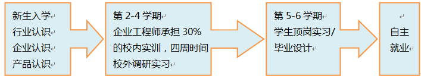

学校简介
广东农工商职业技术学院前身为创办于1952年的广东农垦机务学校，1984年开始举办大专学历教育，2000年转制为职业技术学院。半个多世纪以来，学院坚持“以人为本，特色强校，求实创新，和谐发展”的办学理念，为各类企事业单位培养了4万多名专业技术人才和经营管理人才，目前有全日制在校生近19000人。
学院主校区坐落于改革开放前沿的广州市天河区，目前呈现一校三区的办学格局，东校区位于广州奥林匹克中心附近，北校区位于广州增城市。学院占地面积1208亩，建筑面积462924平方米，图书藏书超过100万册。学院目前共有58个专业（方向），“会计与审计”、“农产品质量检测”、“电子信息工程技术”3个专业被评为省级高职教育重点培育专业。校内建有各类实训场所11800多平方米，拥有国家级高职高专实训基地1个，省级高职教育实训基地3个，校外实训实习基地900多家。
汽车技术服务与营销专业成立于2005年，现有307名学生，如表2所示。经过多年的建设发展，该专业已组建一支拥有副教授、高级工程师、讲师、学校指导教师等20位专任教师及15位兼任教师的教师团队，其中，“双师”素质型教师的比例已达到85%，高级职称比例达到30%，硕士以上学位的教师比例达到90%，初步建立实训课程及实习课程由实验教师、兼职教师、行业能工巧匠指导的教学机制。从该专业建设以来，学院总共投入经费约500万元，实训区面积4140㎡，生均实践环节投入约3000元，实践经费充裕。
表2 在校学生具体人数
| 专业 | 年级 | 学生人数（人） | 总人数（人） |
|---|---|---|---|
| 汽车技术服务与营销专业 | 2013 | 114 | 309 |
| 2014 | 87 | ||
| 2015 | 108 |
汽车专业非常重视学生实训实践基地的建设和管理工作，到目前为止，已建立包括汽车拆装实训室、汽车营销实训室在内的16个校内实训基地，如表3所示。并且，拟新增理实一体化实训室3个，计划投资108万元购置新型变速器教学试验台、新能源汽车等。
表3 汽车技术服务与营销现有实训室（基地）一览表
| 序号 | 实训室名称 | 建设经费（万元） | 位置 |
|---|---|---|---|
| 1 | 汽车营销实训室 | 61 | 北区实训楼B101 |
| 2 | 汽车模拟仿真实训室 | 8 | 北区实训楼D104 |
| 3 | 汽车空调实训室 | 15 | 北区实训楼C103 |
| 4 | 汽车美容实训室 | 20 | 北区实训楼A101 |
| 5 | 汽车拆装实训室 | 67 | 北区实训楼D101 |
| 6 | 汽车检测与维修实训室 | 70 | 北区实训楼B103 |
| 7 | 汽车底盘综合实训室 | 32 | 北区实训楼C101 |
| 8 | 汽车电器综合实训室 | 40 | 北区实训楼C104 |
| 9 | 汽车发动机综合实训室 | 60 | 北区实训楼C102 |
| 10 | 汽车台架检测实训室 | 18 | 北区实训楼C101 |
| 11 | 汽车台架维修实训室 | 23 | 北区实训楼C101 |
| 12 | 钳工量具实训室 | 18 | 北区实训楼D103 |
| 13 | 电焊实训室 | 8 | 北区实训楼D103 |
| 14 | 汽车配件实训室 | 10 | 本部培训楼101 |
| 15 | 汽车综合性能检测中心 | 45 | 本部培训楼101 |
| 合计 | 510 | ||
目前汽车专业已经建立了包括广州丰田特约维修公司、广州市骏怡汇汽车科技有限公司等39个校外实训基地，如表4所示。计划到2016年底，完成45个校外实训基地的建设工作，进一步满足驾驶实训、汽车综合性能实训、电动车运用与维修实训、轮岗实习、顶岗实习、就业等需求。通过对学生的定期回访及企业交流，学生们普遍受到用人单位的好评。
表4 汽车技术服务与营销专业校外实训基地情况
| 序号 | 名称/合作企业 | 主要实训内容 |
|---|---|---|
| 1 | 广东广物福恒汽车服务有限公司 | 汽车销售、保养、保险、客服、维修检测、接待等 |
| 2 | 广丰长凯汽车服务有限公司 | 汽车销售、保养、保险、客服、维修检测、接待等 |
| 3 | 广东好快省汽车快修连锁服务有限公司 | 汽车保养、客服、维修检测、接待等 |
| 4 | 广东捷碧汽车用品有限公司 | 汽车用品销售、保养、客服、售后培训等 |
| 5 | 广物鸿福汽车服务有限公司 | 汽车销售、保养、客服、维修检测、接待等 |
| 6 | 广州骏怡汇汽车科技有限公司 | 汽车用品销售、保养、客服、维修检测、接待等 |
| 7 | 广州五加五汽车零配件销售服务有限公司 | 汽车零配件销售、保养、客服、培训等 |
| 8 | 广东广物福远汽车贸易有限公司 | 汽车销售、保养、保险、客服、维修检测、接待等 |
| 9 | 广物俊达汽车服务有限公司 | 汽车销售、保养、保险、客服、维修检测、接待等 |
| 10 | 广东南华汽车贸易有限公司 | 汽车销售、保养、保险、客服、维修检测、接待等 |
| 11 | 东风日产广物京安专营店 | 汽车销售、保养、保险、客服、维修检测、接待等 |
| 12 | 广州沙河丰田汽车销售服务有限公司 | 汽车销售、保养、保险、客服、维修检测、接待等 |
| 13 | 佛山广物众凯汽车销售服务有限公司 | 汽车销售、保养、保险、客服、维修检测、接待等 |
| 14 | 佛山市顺德顺协容桂别克4S店 | 汽车销售、保养、保险、客服、维修检测、接待等 |
| 15 | 广物骏博汽车销售服务有限公司 | 汽车销售、保养、保险、客服、维修检测、接待等 |
| 16 | 广州广物众益汽车销售服务有限公司 | 汽车销售、保养、保险、客服、维修检测、接待等 |
| 17 | 广州市南菱汇通汽车销售服务有限公司 | 汽车销售、保养、保险、客服、维修检测、接待等 |
| 18 | 广物清远众达汽车销售服务有限公司 | 汽车销售、保养、保险、客服、维修检测、接待等 |
| 19 | 广州珠富汽配经营部 | 汽车零配件销售、保养、客服、培训等 |
| 20 | 广州新力达汽车运输服务有限公司 | 汽车保养、保险、客服、维修检测、接待等 |
| 21 | 深圳市易达丰田汽车服务有限公司 | 汽车销售、保养、保险、客服、维修检测、接待等 |
| 22 | 广州春源红旗汽车销售服务有限公司 | 汽车销售、保养、保险、客服、维修检测、接待等 |
| 23 | 广物锐详东方日产专营店 | 汽车销售、保养、保险、客服、维修检测、接待等 |
| 24 | 佛山南海发展汽车专营店 | 汽车销售、保养、保险、客服、维修检测、接待等 |
| 25 | 广州裕丰汽配公司 | 汽车零配件销售、保养、客服、培训等 |
| 26 | 广州广物德远汽车销售服务有限公司 | 汽车销售、保养、保险、客服、维修检测、接待等 |
| 27 | 广州宝昌汽车销售服务有限公司 | 汽车销售、保养、保险、客服、维修检测、接待等 |
| 28 | 东莞市东奥汽车服务有限公司 | 汽车销售、保养、保险、客服、维修检测、接待等 |
| 29 | 广东恒远汽车贸易有限公司 | 汽车销售、保养、保险、客服、维修检测、接待等 |
| 30 | 广州东风日产华溢专营店 | 汽车销售、保养、保险、客服、维修检测、接待等 |
| 31 | 东莞锦众汽车贸易有限公司 | 汽车销售、保养、保险、客服、维修检测、接待等 |
| 32 | 广州宜配佳汽车配件有限公司 | 汽车零配件销售、保养、客服、培训等 |
| 33 | 东风本田新星特约维修服务店 | 汽车销售、保养、保险、客服、维修检测、接待等 |
| 34 | 比亚迪机电设备有限公司 | 汽车销售、保养、保险、客服、维修检测、接待等 |
| 35 | 广州安桦汽车贸易有限公司 | 汽车销售、保养、保险、客服、维修检测、接待等 |
| 36 | 广州长力汽车销售服务有限公司 | 汽车销售、保养、保险、客服、维修检测、接待等 |
| 37 | 广州中奥汽车销售服务有限公司 | 汽车销售、保养、保险、客服、维修检测、接待等 |
| 38 | 广东瑞华粤通汽车服务有限公司 | 汽车销售、保养、保险、客服、维修检测、接待等 |
| 39 | 广州市保鸿汽车维修有限公司 | 汽车销售、保养、保险、客服、维修检测、接待等 |
我院汽车专业与企业工学结合具体实施的内容包括如下图所示：
